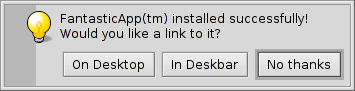

Español
Español Français
Français Deutsch
Deutsch Italiano
Italiano Русский
Русский Svenska
Svenska 日本語
日本語 Українська
Українська 中文 ［中文］
中文 ［中文］ Português
Português Suomi
Suomi Slovenčina
Slovenčina Magyar
Magyar Português (Brazil)
Português (Brazil) English
English Haiku-specific commandline applications
Haiku-specific commandline applications
| Ubicación: | /bin /boot/common/bin ~/config/bin |
All commandline applications shipped with Haiku are in either /boot/system/bin or /boot/common/bin. Your own or additionally installed commandline apps should go in ~/config/bin. All these locations are part of the PATH variable and are therefore automatically found.
The following isn't an exhaustive list of all Haiku-specific CLI apps, it serves just to highlight a few of the most useful to give you a taste. Feel encouraged to explore what's in the bin/ folders on your own a bit. Executing an app with the parameter --help shows the usage of the command and all its various options.
 Relacionados con los atributos: listattr, catattr, addattr, rmattr, copyattr
Relacionados con los atributos: listattr, catattr, addattr, rmattr, copyattr
Estos comandos son utilizados para mostrar, leer, añadir o eliminar atributos de ficheros. Recuerde que estos metadatos sólo están disponibles actualmente en los volúmenes formateados como BFS. ¡Mover los ficheros a otro sistema de ficheros eliminará todos los atributos!
Todos estos comandos están descritos en el tema Atributos en la Terminal.
Relacionados con el indexado: lsindex, mkindex, reindex, rmindex
Con estos comandos se puede listar, crear, reindexar y eliminar atributos del índice de BFS. Todo volumen tiene su propio índice, recuérdelo cuando copie ficheros de un volumen a otro.
Estos comandos están descritos en el tema Indice.
Comandos útiles de scripting
Aquí se muestran unas pocas herramientas en línea de comandos que son especialmente útiles para scripting (ver también el tema Bash y Scripting).
alert | alert conjures up the typical alert window with a pre-defined icon, explanatory text and up to three buttons. It will return the title of the pressed button and an exit status (starting with 0). For example, this is made of the line: alert --idea "FantasticApp(tm) installed successfully! Would you like a link to it?" "On Desktop" "In Deskbar" "No thanks"  | |
filepanel | filepanel displays a load or save file panel and lets the user choose a file or location. As a return value you'll get the chosen file or folder's path. There are several parameters available, for example to set a starting directory, a window title, a default name when saving or restrictions to the allowed types of files. This is an example of filepanel -s -t "Save your logfile" -d ~/config/settings -n Fantastic.log
| |
waitfor | waitfor is a nice way to wait for a particular application or thread to be started or to have ended. | |
query | query is the commandline version of the Find panel. In fact, a quick way to generate the search term is to build a query in the Find panel, switch to , add double quotes (") in front and back and paste the whole string after your query command in Terminal or your script. |

Other commands
checkfs | checkfs is an important tool to check for errors in your file system. Simply add the volume or device name and it'll run through every file and correct inconsistencies where possible. | |
open | open is a very handy little tool. With it you open any file with its preferred application, or start a specific application by its signature without the need to know its exact path. It also works with URLs and even with the "virtual" directories . for the current directory and .. for the parent, opening the folder in Tracker. | |
desklink | desklink can install an icon for any file, folder, query or application in the Deskbar tray. It also offers the option to provide a context menu when right-clicking an icon to execute special actions. As an example, try this to add the commandline app screenshot with various options (the "\" in the first line is just for the line break in Terminal): desklink "cmd=Active window (2s):/bin/screenshot --window --border --delay 2" \ "cmd=Remove replicant:desklink --remove=screenshot" /bin/screenshot
|